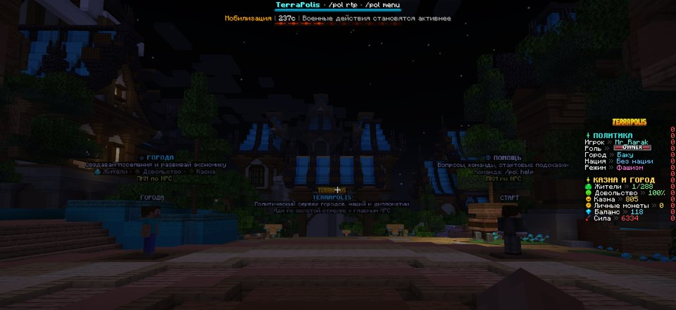

Зайди на сервер
IP: c7.play2go.cloud:20048. Прими ресурспак, иначе не увидишь иконки, бейджи, оружие и напитки.
TerraPolis v57 • политическая песочница
Сервер, где территория — это власть, казна — инструмент, суд — давление, а война за чанк может изменить карту мира.
Этот блок — короткий маршрут. Ниже есть полная вики и каталог команд.
IP: c7.play2go.cloud:20048. Прими ресурспак, иначе не увидишь иконки, бейджи, оружие и напитки.
/guide покажет базовую логику. /pol menu открывает главное меню.
/pol nationality, затем /pol rtp. Так ты попадёшь в дикие земли для старта.
/pol town create Название, потом /pol town hall. Дальше расширяйся через /pol town claim.
В TerraPolis игроки управляют городами: назначают роли, собирают казну, выбирают религию и режим, создают провинции, спорят в суде, объявляют войны, строят барные цепочки и ведут экономику через реальные игровые действия.

Блоки идут подряд без пустых экранов: город, экономика, война, суд, напитки и карта.
/pol town create, мэрия, роли, claim и развитие.
Порты, шахты, форты, колонии, дороги и автономия районов.
Законы, суд, доверие мэра, налоги и управленческие роли.
Войны за чанки, провинции, блокады, захваты и админ-сценарии.
Кофе, чай, квас, бочки, погреба и реальные предметы Minecraft.
Dynmap показывает города, границы, мэрии и районы.
Разделы ниже объясняют механику не как список слов, а как последовательность действий.
Начни вводить слово: город, война, суд, админ, напитки, dynmap, npc. Карточки фильтруются сразу.
Эти ранги взяты из LuckPerms-команд и прав плагина: бейджи, косметика, аукцион, BattlePass и удобства.
Это игровые рецепты сервера. Напитки готовятся через предметы Minecraft, а не через кнопку в меню.
Поставь Brewing Stand. В нижние слоты положи бутылки, в верхний — ингредиент. Присядь и нажми ПКМ.
Кофейные зёрна → кофеЧайные листья → зелёный чайКакао → горячий шоколадПоставь Barrel ниже Y=55, рядом с камнем/льдом, без лавы и костров. Положи ингредиенты и нажми Shift+ПКМ.
Ржаной солод → погребной квасЛедяная крошка → холодный напитокЯгодное сусло → компотЧасть рецептов требует развитие Таверны, Пивоварни, Дистиллерии, Торговли или других веток города.
/pol brew recipes/pol crafts list/pol brew guideНа карте можно смотреть границы городов, провинции, мэрии и важные точки. Если карта не открывается, проверь, что порт 20332 включён на хостинге.